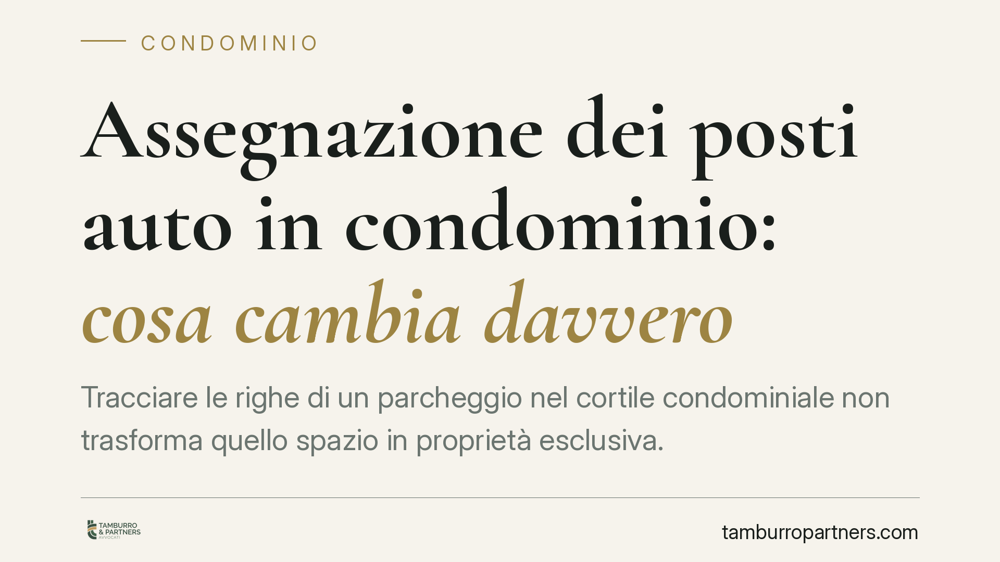

Assegnazione dei posti auto in condominio: cosa cambia davvero
Tracciare le righe di un parcheggio nel cortile condominiale non trasforma quello spazio in proprietà esclusiva. La Cassazione ribadisce che l'assegnazione dei posti auto regola l'uso di un bene comune, senza dividerlo. Una distinzione tecnica con effetti concreti su delibere, quote e diritti dei condomini. Vediamo cosa può decidere l'assemblea e cosa invece richiede il consenso di tutti.

Il fatto
Il cortile condominiale è, di regola, bene comune. Quando l'assemblea decide di ripartire lo spazio in posti auto, spesso nasce un equivoco: si crede che l'assegnazione trasformi ogni stallo in proprietà del singolo condomino. Non è così.
La giurisprudenza della Cassazione è costante nel distinguere due piani. Da un lato, la regolamentazione dell'uso di un bene che resta comune. Dall'altro, la divisione giuridica della proprietà, che comporta la nascita di diritti esclusivi. Sono operazioni diverse, con presupposti diversi.
Inquadramento normativo
Il riferimento è l'art. 1102 del codice civile, che disciplina l'uso della cosa comune. Ciascun partecipante può servirsene, purché non ne alteri la destinazione e non impedisca agli altri di farne pari uso.
Su questa base, l'assemblea può organizzare l'utilizzo del cortile: assegnare stalli, prevedere turnazioni, delimitare le aree con segnaletica orizzontale. Sono misure che ordinano il godimento comune, non lo cancellano.
La Cassazione ha chiarito che la delimitazione visiva — la classica riga tracciata a terra — non equivale a cessione di proprietà. Non basta un segno grafico per sottrarre una porzione di cortile alla comunione. Serve un atto giuridico ben più impegnativo.
La divisione della proprietà, infatti, incide sulla natura del bene e sui diritti di tutti i condomini. Per questo richiede il consenso unanime: nessuno può essere privato della propria quota su un bene comune senza il suo accordo. Una delibera a maggioranza non è sufficiente a produrre questo effetto.
Implicazioni pratiche
Per il condomino la distinzione ha ricadute immediate.
Se l'assegnazione è solo regolamentazione d'uso, lo stallo assegnato non entra nel patrimonio personale. Non può essere venduto separatamente, non aumenta il valore della singola unità immobiliare come bene autonomo e resta soggetto alle decisioni future dell'assemblea sull'organizzazione del cortile.
Quando gli stalli sono in numero inferiore alle unità abitative, l'assemblea può legittimamente introdurre una turnazione, così da garantire a tutti un uso paritario nel tempo. È la soluzione che meglio rispetta l'art. 1102: nessuno viene escluso in modo permanente.
Attenzione invece alle delibere che, di fatto, assegnano stabilmente e in via esclusiva un posto ad alcuni condomini escludendone altri. Se non c'è unanimità, una simile decisione è esposta a impugnazione: sta trasformando un uso comune in un diritto esclusivo senza il titolo per farlo.
Diverso è il caso in cui esista un titolo — atto di acquisto, regolamento contrattuale, atto di divisione — che attribuisca già la proprietà esclusiva di specifici stalli. Lì il diritto nasce dal titolo, non dalla delibera.
Il ruolo dell'amministratore
L'amministratore predispone e sottopone all'assemblea le proposte di regolamentazione. È opportuno che chiarisca ai condomini la natura della decisione: se si tratta di ordinare l'uso comune o di modificare la proprietà. Un verbale ambiguo alimenta contenziosi.
È buona prassi verbalizzare in modo esplicito che l'assegnazione riguarda l'uso del bene comune e non ne modifica la titolarità.
Cosa fare in concreto
- Verifica il titolo: controlla nell'atto di acquisto e nel regolamento condominiale se il posto auto è già di proprietà esclusiva o se rientra tra i beni comuni.
- Leggi il verbale: accertati che la delibera indichi con chiarezza se assegna l'uso o incide sulla proprietà.
- Pretendi la turnazione quando gli stalli sono insufficienti: è il criterio che assicura un godimento paritario ed è deliberabile a maggioranza.
- Impugna nei termini la delibera che assegna stalli in via esclusiva senza unanimità: hai trenta giorni dalla comunicazione o dall'assemblea.
- Chiedi un parere prima di firmare accordi che modificano la proprietà: la divisione giuridica richiede requisiti precisi e va formalizzata correttamente.
Conclusione
Assegnare i posti auto è quasi sempre una questione di uso, non di proprietà. Confondere i due piani porta a delibere fragili e a liti evitabili. Consigliamo di verificare il titolo e la natura della decisione prima di agire, così da adottare lo strumento corretto: turnazione a maggioranza per l'uso, unanimità per ogni intervento sulla proprietà.
---
*Contributo informativo a cura di Tamburro & Partners - Avv. Giuseppe Tamburro. Non costituisce parere legale.*
Ogni condominio ha una storia a sé.
Se gestisci un'amministrazione e vuoi un confronto su una specifica questione condominiale, scrivi allo studio. Ti rispondiamo entro un giorno lavorativo.